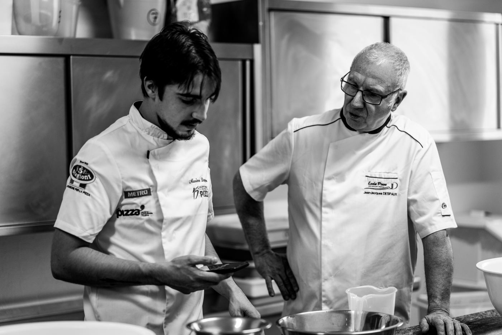
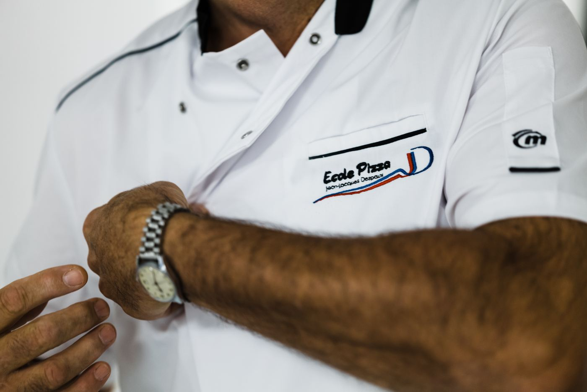
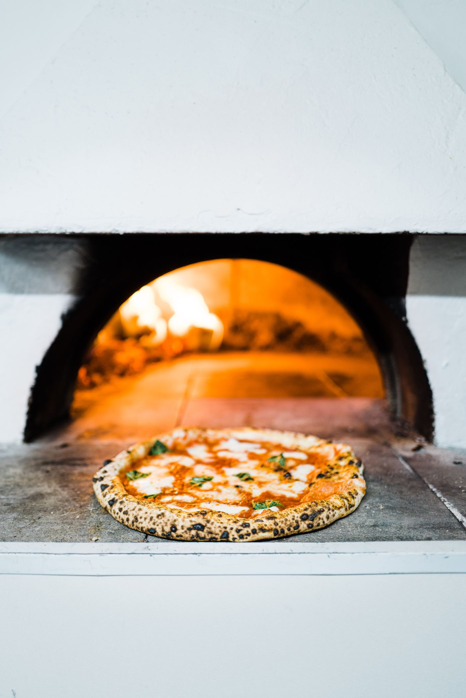
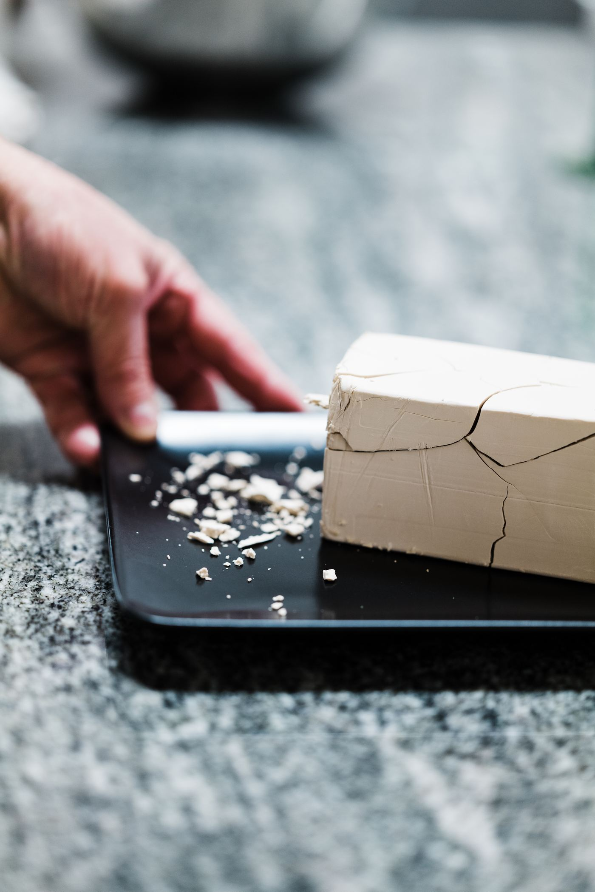
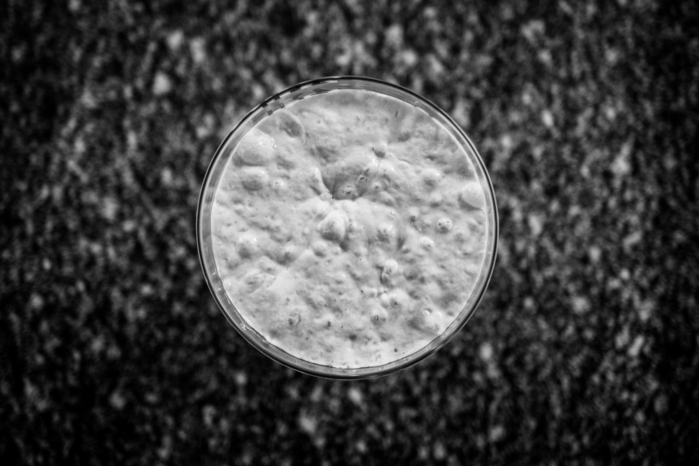
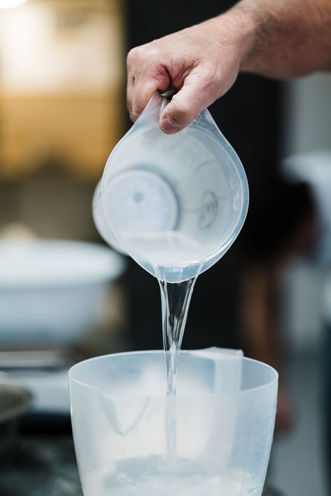
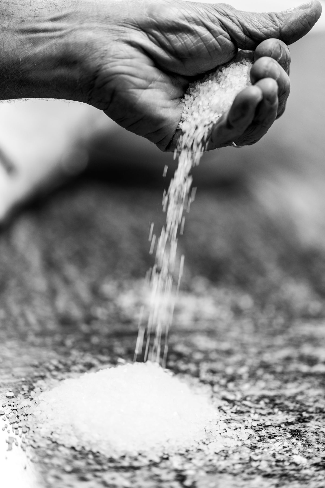
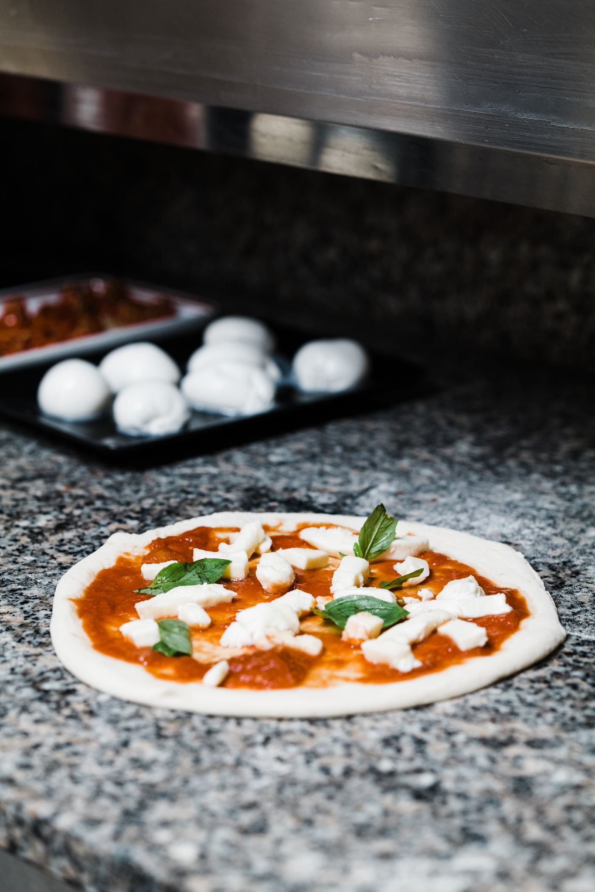

Objectif de la formationRéaliser des pizzas napolitaines, de l'élaboration de l'empâtement jusqu'à la sortie du four, conformément aux cahiers des charges STG et AVPN.
École Pizzaïolo Jean-Jacques Despaux · SIRET 879 955 136 00012 · NAF 8559A
NDA 76 65 00989 65 auprès du préfet de la région Occitanie
101 rue Alsace Lorraine, 65300 Lannemezan · contact@ecole-pizza.com
École Pizzaïolo Jean-Jacques Despaux · Mise à jour le 14/01/2026
Pizza napolitainePréface
1
Préface
Tombé amoureux de la cuisine dans mon enfance, j'ai eu de nombreuses
expériences dans le monde de la restauration.
Quand je me convertis au métier de pizzaïolo, je ne me doute pas de la richesse
de ce savoir-faire.
C'est grâce aux championnats du monde de la pizza, puis au Championnat de France,
que ma technique s'est étoffée.
Au travers de mes formations, je partage avec vous mes techniques, mon savoir-faire
et ma passion des bonnes choses.
Jean-Jacques Despaux Maître Artisan Pizzaïolo · Maître Instructeur Pizzaïolo
Président de l'École Pizza

Ce manuel
Ce document est le support pédagogique remis à chaque stagiaire.
Il suit l'ordre de la formation : les matières premières d'abord, le protocole ensuite,
la cuisson et l'organisation pour finir. Les pages « Notes » sont faites pour être
écrites — les valeurs relevées pendant le stage n'ont de valeur que notées.
La tenue est l'image de l'entreprise. Tout professionnel de la restauration se tient d'avoir une tenue propre.
La tenue est obligatoire
Veste blanche de cuisinier, tee-shirt ou polo
Pantalon de cuisine (jean toléré)
Chaussures de sécurité
Tablier
Torchon
Dans les locaux
Pas de bijoux — l'alliance est tolérée
Interdiction de fumer dans les locaux
Cheveux attachés, ongles courts et sans vernis

Pourquoi c'est une règle et pas un conseil
Une bague retient les résidus de
pâte et se retrouve dans le produit ; une chaussure de ville ne protège pas d'une plaque
sortie du four à 320 °C. La tenue relève de la sécurité au poste autant que de
l'hygiène alimentaire.
Deux portes d'entrée, puis des approfondissements. Le Niveau I ou le Niveau I Pro sont le prérequis de tout le reste.
Nos formations
Parcours
Durée
Contenu
Prérequis
Niveau I — Pizza classique
5 j · 35 h
Empâtement direct, de la farine à la sortie du four
Aucun
Niveau I — option hygiène
5 j · 44 h
Niveau I + hygiène alimentaire en restauration commerciale
Aucun
Fabriquer des pizzas artisanales
5 j · 35 h
Même contenu que le Niveau I, parcours certifiant RS 7404
Professionnels des métiers de bouche
Niveau I Pro — Pizza classique
2 j · 15 h
Le protocole direct et l'étalage à la main, compactés
Professionnels des métiers de bouche
Niveau II — Empâtements indirects
3 j · 21 h
Poolish, Biga, pizza contemporaine
Niveau I ou Niveau I Pro
Niveau Expert
4 j · 28 h
Indirects + In Teglia et In Pala
Niveau I ou Niveau I Pro
Nos spécialisations
Parcours
Durée
Contenu
Prérequis
In Teglia & In Pala
2 j · 14 h
Pizza sur plaque et sur pelle, vendue à la part
Niveau I ou Niveau I Pro
Pizza napolitaine
5 j · 35 h
Empâtement napolitain, Margherita et Marinara
Niveau I ou Niveau I Pro
Durées
Les durées et les tarifs en vigueur figurent sur le programme officiel
de chaque formation et sur www.ecole-pizza.com. Ce sont eux qui font foi : ce tableau situe
les parcours les uns par rapport aux autres, il ne remplace pas le programme.
Un produit protégé par un règlement européen, et une association qui délivre un agrément. Deux choses distinctes.
La pizza napoletana est née à Naples. Ce qui la distingue d'une
pizza « italienne » ordinaire n'est pas une recette secrète : c'est un
cahier des charges écrit, avec des valeurs mesurables.
Elle se reconnaît à son cornicione — le bord soufflé, de 1 à 2 cm — à son
centre très fin, à ses taches brunes de cuisson (la leopardatura), et à un temps
de cuisson qui se compte en secondes.

Deux reconnaissances à ne pas confondre
STG — Spécialité traditionnelle garantie
AVPN — Vera Pizza Napoletana
Nature
Signe officiel européen, inscrit au règlement (UE) n° 97/2010.
Cahier des charges privé d'une association napolitaine (disciplinare, version 2024).
Ce qu'il protège
Une recette et un savoir-faire, pas une origine géographique : on peut faire une Pizza Napoletana STG hors d'Italie.
L'usage de la marque et du logo Vera Pizza Napoletana.
Qui contrôle
Organisme certificateur, selon le droit européen.
L'association elle-même, par agrément et visite.
Ce que l'école en fait
Le référentiel enseigné en formation.
L'école est agréée AVPN : c'est ce cahier qui s'applique à ses propres productions.
Pourquoi ce manuel donne les deux
Parce qu'ils ne disent pas la même chose. Sur
la farine, la levure, la fermentation et jusqu'à la répartition sole/voûte du four, les deux
textes divergent. Un pizzaïolo qui vise l'agrément AVPN et un pizzaïolo qui revendique la STG
ne travaillent pas exactement pareil : autant le savoir.
La cuisson — là où les deux textes se contredisent
STG UE 97/2010
AVPN 2024
Sole
485 °C
380 – 430 °C
Voûte
430 °C
485 °C
Temps
60 à 90 s
60 à 90 s
Four
Four à bois
Four à bois — gaz et électrique acceptés s'ils sont conformes
T° de la pâte en fin de cuisson
60 – 65 °C
—
Sole et voûte sont inversées d'un texte à l'autre
Ce n'est pas une coquille de
ce manuel : les deux cahiers des charges donnent bien des valeurs
croisées. Conséquence pratique : un four réglé pour la STG cuit
davantage par le dessous, un four réglé AVPN davantage par le dessus. Le temps, lui, est le
même dans les deux cas — 60 à 90 secondes.
À trancher pour la formation
Le manuel ne peut pas enseigner les deux réglages
en même temps devant le même four. Il faut décider lequel est celui de l'école — a priori
l'AVPN, puisque l'école est agréée. à trancher — Jean-Jacques
Soixante à quatre-vingt-dix secondes. Le geste de rotation est ce qui décide de la régularité.
Six types en France, cinq en Italie. Le classement se fait au taux de cendres.
C'est en fonction du poids de cendres contenu dans 100 g de matières
sèches que l'on désigne les grands types de farine. Les cendres sont des matières
minérales, principalement contenues dans le son. Il existe six types en
France et cinq en Italie.
Le raffinage et les types — France / Italie
Type France
Tipo Italie
Taux de cendres
Taux d'extraction
Utilisation
T45
—
0,50 moyen
67
Pizza, pâtisserie
T55
00
0,50 à 0,60
75
Pizza, pains blancs
T65
0
0,62 à 0,75
78
Pizza, baguette de tradition, pains spéciaux
T80
1
0,75 à 0,90
80 – 85
Pains semi-complets
T110
2
1,00 à 1,20
85 – 90
Pains complets
T150
Integrale
plus de 1,40
92 – 98
Pains complets ou autres
Comment lire ce tableau
De haut en bas, la farine devient plus complète :
plus de cendres, plus de son, plus de fibres. Conséquence directe au pétrin : elle
boit davantage d'eau, la fermentation ralentit, et la
pâte est plus dense. Descendre d'une ligne, c'est ajouter de l'eau et du
temps.
Pizza napolitaineL'indice de force de la farine (W)
7
L'indice de force de la farine (W)
L'indice qui dit ce qu'une farine sait faire — et ce qu'elle ne saura pas faire.
Le W est l'indice de qualité de la farine. Il ne figure pas sur
les sacs. Il est calculé en laboratoire par des appareils spéciaux, dont
l'alvéographe de Chopin, qui mesure l'extensibilité et la ténacité de la
pâte.
À quoi sert quelle force
Indice W
Usage
W 120 – 150
Biscuits et crackers
W 200 – 250
Pizzas faites avec des empâtements directs à levage court
W 250 – 310
Pizzas napolitaines
W 330 – 390
Pizzas faites avec des empâtements directs à levage long et indirects
W 400 – 430
Farines de force dites Manitoba, qui servent à renforcer des farines plus faibles
Le repère qui compte
Le seuil pratique à retenir est W 330 :
en dessous, la farine ne tient pas une pré-fermentation de 16 à 20 heures (Biga) ni une
maturation longue. C'est la frontière entre le Niveau I et le Niveau II.
Pizza napolitaineL'indice de force de la farine (W)
Lire un alvéogramme
L'alvéographe insuffle de l'air dans un disque de pâte jusqu'à le faire éclater, et trace
la courbe de la résistance. Cinq symboles s'en déduisent :
Symbole
Signification
P — Pression
Mesure la ténacité, la fermeté de la pâte et sa résistance à la déformation.
G — Gonflement
Correspond à la quantité d'air insufflée à la pâte jusqu'à son éclatement.
L — Largeur
Longueur du graphique : il représente l'extensibilité de la courbe et indique l'élasticité de la pâte et l'allongement au façonnage.
W — Work (travail)
Mesure le travail nécessaire pour déformer le pâton jusqu'à son éclatement. On parle aussi de force boulangère.
P/L
Rapport qui traduit l'équilibre — ou le déséquilibre — entre la ténacité et l'extensibilité.
Le P/L, l'indice qu'on oublie
Deux farines de même W peuvent se comporter à
l'opposé l'une de l'autre. Un P/L élevé donne une pâte tenace qui revient sous les doigts ;
un P/L bas, une pâte molle qui se déchire. Pour la pizza, on cherche un P/L compris entre
0,50 et 0,70 — c'est d'ailleurs ce qu'imposent les cahiers des charges
napolitains.
L'alvéogramme de Chopin. P se lit en hauteur, L en largeur, et W est l'aire — pas un point sur la courbe. C'est pour cela que deux farines de même W peuvent se comporter à l'opposé : leur rapport P/L diffère.
Un champignon microscopique, Saccharomyces cerevisiae. Il mange le sucre de la farine et rend du gaz et de l'alcool.
La levure est un micro-organisme très répandu dans la nature. La production de levure
industrielle pour la panification a commencé au début du siècle dernier. En panification,
on utilise la variété Saccharomyces cerevisiae — la levure de bière, ou de
boulanger.
Elle a la particularité d'utiliser les sucres simples pour deux raisons : elle
s'en nourrit, et elle possède la propriété de transformer les sucres naturellement
présents dans la farine en dioxyde de carbone et en
alcool. Cette transformation se nomme la
fermentation alcoolique.

Quatre types de levure en pizzeria
Type
Particularité
Levure fraîche
La référence de l'école. Se conserve au froid, s'émiette.
Levure sèche active
À réhydrater. L'eau doit être à 38 °C — ne jamais dépasser 50 °C, la levure meurt.
Levure sèche instantanée
S'incorpore directement à la farine. Dosage divisé par deux.
Levain
Écosystème microbien naturel, liquide ou solide. Demande un entretien quotidien.
La température tue
Délayée dans de l'eau froide, la levure
voit son action ralentie. Dans de l'eau tiède (au-dessus de 40 °C),
elle est affaiblie. Dans de l'eau chaude (au-dessus de 50 °C), elle
est détruite. Un empâtement qui ne lève pas commence presque toujours par
là.
Elle assure la levée de la pâte par sa production de dioxyde de carbone, donc la légèreté et l'alvéolage du produit fini
Elle contribue à la formation des arômes par la production d'alcool
Avec ou sans air
Mode de vie
Ce qui se passe
Vie aérobie
En présence d'air, la levure respire : l'énergie utilisée lui permet de se reproduire.
Vie anaérobie
En l'absence d'air, elle puise son énergie dans la fermentation des sucres, qu'elle transforme en alcool. C'est cette fonction qui est utilisée en fabrication industrielle.

La reproduction
La cellule de levure se reproduit par bourgeonnement d'une cellule mère : en une
heure environ, elle en produit une autre parfaitement identique.
1 g de levure fraîche = 10 milliards de cellules.
Trop de levure
Une dose de levure excessivement élevée ne permet pas de
respecter les étapes de la panification. Elle conduit à une pâte à pizza peu savoureuse et
à un rassissement très rapide. Le goût vient du temps, pas de la levure.
La dose de levure varie en fonction des techniques de fermentation
(directe, indirecte), des modes de pétrissage, et des conditions
de température et d'hygrométrie environnantes.
Fraîche2 – 4 g / kg
Sèche active2 – 4 g / kg
Sèche instantanée1 – 2 g / kg
Doses maximales admises par kilo de farine, selon les saisons.
Dose par kilo de farine, selon la température de la farine
Température de la farine
Levure fraîche
Sèche active à réhydrater
Sèche instantanée
10 à 16 °C
4 g
4 g
2 g
16,1 à 21 °C
3,5 g
3,5 g
1,75 g
21,1 à 26 °C
3 g
3 g
1,5 g
26,1 à 31 °C
2,5 g
2,5 g
1,25 g
31,1 à 36 °C
2 g
2 g
1 g
Lire le tableau à l'envers
Plus la farine est chaude, moins
on met de levure : la chaleur fait déjà le travail. C'est la même logique que le calcul
de la température de l'eau (chapitre suivant) — on compense la saison, on ne la subit pas.
Incorporation
La levure peut être émiettée dans la farine en début de pétrissage, ou
délayée dans l'eau de coulage si la température de celle-ci est modérée.
La levure fraîche a son action optimale pour une pâte dont la température se situe entre
21 et 27 °C suivant la saison.
L'eau servant au pétrissage se nomme eau de coulage. Trois choses comptent : sa qualité, sa quantité, sa température.
Ce que fait l'eau de coulage
Elle hydrate la farine
Elle dissout le sel et la levure
Elle permet au gluten de se former en réseau
Elle est indispensable au développement de la fermentation et aux actions enzymatiques

Les critères de l'eau
L'eau doit être potable — critères organiques, chimiques et
bactériologiques conseillés par l'Organisation mondiale de la santé.
Critère
Exigence
Organique
Incolore, limpide, inodore, sans goût.
Chimique
Lorsqu'elle contient des sels de calcium ou de magnésium (craie, chaux, plâtre), on dit que l'eau est calcaire ou séléniteuse.
La dureté
La dureté est la conséquence de la présence de sels minéraux. Elle se mesure en
degré français (°f ou °fH — à ne pas confondre avec °F, le degré
Fahrenheit). Un degré français correspond à 4 mg de calcium ou 2,4 mg de magnésium
par litre d'eau.
Titre hydrotimétrique
Qualification
Effet sur la pâte
0 à 7 °f
Eau très douce
Pâte collante. Probabilité d'apparition de bulles à la cuisson.
Le texte annonçait « douce jusqu'à
5 ° », « moyennement dure entre 15 et 30 ° » et « dure : plus de 20 ° » —
trois seuils qui se chevauchent et qui ne correspondent pas au tableau ci-dessus. C'est le
tableau qui a été retenu ici, parce qu'il est cohérent de bout en bout.
à confirmer — Jean-Jacques
Corriger une eau mal adaptée
Problème
Correction
Eau douce
On peut ajouter un peu de sel en plus dans la pâte.
Eau dure
On doit utiliser un adoucisseur.
Le taux d'hydratation
C'est la quantité d'eau nécessaire pour hydrater le kilo de farine, par rapport à sa
force. Le taux minimum d'hydratation est de 54 %, jusqu'à
60 % avec un empâtement direct. Il est toujours possible de rajouter
de l'eau si l'on substitue une partie de la farine de base par une autre — farine complète,
semi-complète, soja, châtaigne, seigle, orge, mix.
Hydratation minimale selon la force
Force de la farine
Hydratation minimale
Eau pour 1 kg de farine
W 200
54 %
540 g
W 250
55 %
550 g
W 300
56 %
560 g
W 330
57 %
570 g
W 390
59 %
590 g
W 420
60 %
600 g
Gardez toujours un verre d'eau
Sur chaque protocole de ce manuel, une
consigne revient : garder toujours un verre d'eau pour le bassinage. Le
tableau donne un point de départ, pas une vérité : la farine du jour, l'hygrométrie du
labo et la substitution éventuelle décalent toujours un peu le résultat. Les deux ou trois
derniers pourcents se versent à la main, en regardant la pâte.
Il freine la fermentation, resserre le réseau, colore la croûte et fait le goût. Quatre effets pour un seul ingrédient.
Le sel gemme est extrait des mines ou des carrières provenant de
dépôts géologiques ; le sel marin est recueilli par évaporation de
l'eau de mer dans les marais salants.
Rôle du sel en panification
Il freine et régularise la fermentation
Il contribue à la fixation de l'eau et améliore la rétention gazeuse
Il participe à la bonne coloration de la croûte et à son croustillant
Il améliore la saveur du produit fini
Il retarde l'oxydation de la pâte, qui reste blanche

Sur le réseau gluténique
Le sel améliore les qualités plastiques de la pâte en renforçant sa ténacité, son
élasticité et sa maniabilité : il renforce le réseau gluténique, la
gliadine devenant moins soluble. Dans l'eau salée il se forme une plus grande quantité de
gluten, avec des fibres plus courtes liées entre elles par attraction électrostatique.
Deux propriétés à connaître
Propriété
Effet
Antiseptique
Positif — il brûle les micro-organismes responsables du développement des moisissures. Négatif — il brûle aussi les cellules de levure et diminue le développement de l'anhydride carbonique.
Hygroscopique
Il augmente la densité de la pâte : on peut l'hydrater davantage sans la rendre collante. Il améliore la conservation de la pâte et retarde sa dessiccation.
Dose usuelle17 – 22 g / kg de farine
Jamais avec la levure
Le sel se verse petit à petit, en fin de
pétrissage, et jamais en contact direct avec la levure : mis ensemble dans
l'eau, il en tue une partie avant même le démarrage.
Attention : ici l'unité de base est le litre d'eau, pas le kilo de farine. C'est l'inverse du reste du manuel.
Ne pas confondre les deux logiques
Dans toutes les autres formations de
l'école, l'unité de calcul part d'1 kg de farine et l'eau s'en déduit
(54 à 60 %). Les deux cahiers des charges napolitains font l'inverse : ils partent
d'1 litre d'eau et donnent la farine. Sur une même feuille, les deux
raisonnements donnent des nombres très différents — vérifiez toujours de quel côté vous
partez.
Ce que donne un litre d'eau
Base : 1 litre d'eau
STG
AVPN
Eau
1 L
1 L
Sel
50 à 55 g
40 à 60 g
Levure fraîche
3 g
0,1 à 3 g
Farine tipo 00
1,800 kg
1,600 à 1,800 kg
Huile
0
0
Hydratation résultante
env. 55,5 %
55,5 à 62,5 %
Combien de pâtons ?
Un litre d'eau et 1,8 kg de farine donnent environ 2,850 kg de pâte
(eau + farine + sel + levure). À 250 g le pâton, cela fait environ
11 pizzas ; à 200 g, environ 14.
Pâte obtenueenv. 2,85 kg
Pâtons de 250 genv. 11 pizzas
Pâtons de 200 genv. 14 pizzas
Conversion : du litre d'eau au kilo de farine
Pour retrouver la logique habituelle de l'école : 1 kg de farine
correspond à 555 ml d'eau en STG (55,5 %), et de 555 à
625 ml en AVPN. Le sel passe alors à 28 à 31 g/kg en STG, soit
nettement plus que les 17 à 22 g de la pizza classique.
Le sel napolitain surprend
Près du double de la pizza classique, à
hydratation pourtant modérée. C'est la contrepartie d'une pâte sans huile et à fermentation
courte : le sel est le seul frein dont dispose le pizzaïolo, et il porte tout le goût.
Le déroulé du règlement européen : à température ambiante, pointage puis apprêt, sans froid.
Hydratationenv. 55,5 %
Fermentation25 °C
Total6 – 8 h
Dissoudre
Verser 1 litre d'eau dans le pétrin. Y dissoudre le
sel (50 à 55 g).
Amorcer
Ajouter 10 % de la farine prévue, puis la levure
fraîche (3 g). Le sel et la levure ne doivent jamais se rencontrer dans
l'eau pure : la farine sert d'écran.
Incorporer
Ajouter la farine restante progressivement, jusqu'aux
1,8 kg. Pétrir jusqu'à obtenir une pâte lisse, souple et non
collante — comptez 10 à 20 mn. Température de pâte visée :
25 °C.
2 hPointage — en masse, couvert, à température ambiante 25 °C.
Staglio — la coupe à la main
Diviser à la main en pâtons de 180 à 250 g, et
bouler. Le staglio a mano fait partie du cahier des charges : pas de
diviseuse.
4 à 6 hApprêt — en bacs couverts, à température ambiante. La pâte est prête quand le pâton s'étale sous son propre poids.
Le pH, un contrôle rarement fait
Le règlement donne un pH de
5,87 en fin d'apprêt. Un pH-mètre de poche suffit à le vérifier : c'est
le seul contrôle objectif du degré de maturation, là où l'œil et le doigt restent
subjectifs.
Le cahier de l'association : moins de levure, fermentation plus fraîche et plus longue, chambre contrôlée.
Hydratation55,5 – 62,5 %
Chambre18 – 20 °C
Humidité60 – 70 % HR
Dissoudre
1 litre d'eau, 40 à 60 g de sel dissous.
Amorcer
Environ 10 % de la farine, puis la levure :
0,1 à 3 g de levure fraîche selon la température, l'humidité et le temps
de fermentation visé. Sèche : un tiers de cette dose. Levain naturel : moins de
10 % du poids de farine.
Pétrir
Incorporer la farine restante (1,600 à 1,800 kg). Pétrissage
d'environ 10 mn, 20 mn maximum. Température de pâte et
de service : 16 à 22 °C.
1re étapeFermentation en masse, en chambre contrôlée à 18-20 °C, 60-70 % d'humidité.
Staglio
Diviser à la main en pâtons de 200 à 280 g, bouler serré.
2e étapeApprêt en bacs, même chambre contrôlée, jusqu'à maturité du pâton.
0,1 g de levure, ce n'est pas une erreur
La plage AVPN va de
0,1 à 3 g par litre d'eau. Le bas de la plage correspond à une fermentation
très longue en chambre fraîche ; le haut, à un service le jour même. C'est le
temps qui fait le goût, pas la levure — et c'est exactement l'inverse du
réflexe qu'on a quand la pâte ne monte pas assez vite.
Jamais d'huile dans la pâte
Ni STG ni AVPN n'autorisent l'huile dans
l'empâtement. La pâte napolitaine est faite pour être utilisée rapidement : elle n'a
rien à figer. L'huile d'olive arrive sur la garniture, en filet, avant ou
après la cuisson.
Tout se joue là : chasser le gaz vers le bord, et ne jamais toucher le cornicione.
L'étalage napolitain se fait uniquement à la main. Ni rouleau, ni
laminoir : les deux écrasent les alvéoles et il n'y a plus de corniche.
Fariner le plan de travail à la semoule extra-fine ou à la farine
d'étalage.
Poser le pâton et presser du bout des doigts, du centre vers le bord,
en s'arrêtant à 1 à 2 cm du bord : c'est ce geste qui pousse le
gaz dans la corniche.
Retourner, répéter, puis étirer la pâte en la faisant tourner sur
elle-même.
Vérifier l'épaisseur au centre : 0,4 cm.
Centre0,4 cm
Cornicione1 – 2 cm
Diamètre22 – 35 cm
Les trois fautes classiques
1. Écraser la corniche en
posant la garniture trop au bord : elle ne gonflera pas.
2. Trop fariner : la farine brûle à 450 °C et donne un goût
amer.
3. Étaler un pâton trop froid : il revient sous les doigts et se
déchire au centre. Le pâton napolitain se travaille à température ambiante.

La corniche est restée intacte : c'est elle qui va gonfler en quatre-vingts secondes.
Tomate d'abord, en spirale du centre vers le bord, en
s'arrêtant à la corniche. Mozzarella ensuite, répartie et non tassée.
Basilic, puis le filet d'huile en dernier. Une garniture posée trop tôt sur une pâte étalée
détrempe le centre : on garnit juste avant d'enfourner.
Soixante à quatre-vingt-dix secondes. Aucune autre cuisson de ce manuel ne demande autant d'attention par seconde.
Temps60 – 90 s
Sole380 – 485 °C
Voûte430 – 485 °C
La pizza est enfournée directement sur la sole, sans plaque. Le pizzaïolo
la fait tourner à la pelle pendant la cuisson pour l'exposer régulièrement à
la flamme : c'est ce geste qui produit une corniche uniforme et la
leopardatura.
Reconnaître une cuisson réussie
Signe
Ce qu'il indique
Cornicione gonflé, 1 à 2 cm
Le gaz a bien été poussé vers le bord à l'étalage, et la pâte était mûre.
Taches brunes irrégulières (leopardatura)
Très haute température, temps très court. Des taches régulières et uniformes signalent au contraire un four trop doux et une cuisson trop longue.
Centre souple, non croustillant
Normal : la napolitaine se plie en quatre (a portafoglio). Un centre cassant veut dire trop de cuisson.
Dessous marqué mais non noirci
Sole à la bonne température. Un dessous pâle : sole trop froide. Noirci : trop chaude, ou pizza laissée trop longtemps au même endroit.
Garniture posée jusqu'au bord, ou pâte pas assez mûre.
S'arrêter à 1-2 cm du bord ; allonger l'apprêt.
Pâte qui se déchire au centre
Pâton trop froid, ou étalage trop appuyé.
Remettre à température ambiante ; alléger la pression des doigts.
Fond détrempé
Mozzarella trop humide, ou pizza garnie trop à l'avance.
Égoutter la mozzarella la veille ; garnir juste avant d'enfourner.
Goût amer
Excès de farine d'étalage brûlée sur la sole.
Fariner moins ; brosser la sole entre les fournées.
Corniche brûlée, centre cru
Voûte trop forte par rapport à la sole.
Rééquilibrer sole/voûte ; éloigner la pizza de la flamme.
Pâte qui colle à la pelle
Pas assez de semoule, ou pâton trop hydraté pour la farine utilisée.
Semouler la pelle ; vérifier que le W de la farine tient l'hydratation choisie.
Le thermomètre infrarouge
À ces températures, le thermostat du four ment
souvent de 30 à 50 °C. Un thermomètre infrarouge pointé sur la sole coûte peu et donne
la seule valeur qui compte : celle de l'endroit exact où va se poser la pizza.
Les mots du métier, tels qu'ils sont employés pendant la formation.
A
Abaisser :
Technique manuelle ou mécanique d'étirement de la pâte pour former la pizza (l'abaisse).
Alvéographe de Chopin :
Extensimètre qui détermine le comportement mécanique d'une pâte de farine, sa « force boulangère ». Il la déforme par pression d'air pour mesurer la ténacité, l'extensibilité, l'élasticité et la force (W).
AVPN :
Associazione Verace Pizza Napoletana. Association napolitaine qui délivre l'agrément « Vera Pizza Napoletana » et publie son propre cahier des charges (disciplinare).
B
Bac à pâtons :
Caisse plastique de différentes tailles qui sert à stocker les pâtons pour les laisser reposer avant la fabrication des pizzas.
Boulage :
Technique manuelle ou mécanique pour réaliser des petites boules de pâte (pâtons), destinées à la fabrication de la pizza.
C
Conduction :
Transmission de la chaleur par contact direct avec une surface chaude (la sole).
Convection :
Transmission de chaleur par une source chaude qui chauffe l'air dans une chambre de cuisson.
Corniche :
Partie extérieure de la pâte qui gonfle pendant la cuisson (aussi appelée trottoir, ou cornicione en italien).
Cornicione :
Le bord de la pizza napolitaine, soufflé et alvéolé, d'une hauteur de 1 à 2 cm.
D
Détente :
Phase de repos de la pâte avant les rabats. Elle permet au réseau de gluten de se former : la pâte devient plus élastique.
F
Façonnage :
Mise en forme du pâton pour réaliser un disque.
Farine :
Poudre obtenue par la mouture des grains de céréales.
Fermentation :
Réaction naturelle obtenue par le mélange des ingrédients, qui permet et participe au développement de la pâte à pizza.
Fleurage :
Fine couche de farine d'étalage ou de semoule extra-fine déposée sur le plan de travail, qui favorise la glisse au moment de placer la pizza sur la pelle.
Force boulangère (W) :
Indice qui classe les farines suivant la qualité du blé. Il est mesuré à l'alvéographe de Chopin.
G
Gluten :
Substance composée de protéines qui subsiste après l'élimination de l'amidon dans la farine. Elle forme, avec l'eau, le réseau qui retient le gaz.
H
Hydratation :
Quantité de liquide (eau, huile) à l'intérieur de la pâte, mesurée en pourcentage du poids de farine.
L
Leopardatura :
Les taches brunes caractéristiques de la corniche napolitaine, produites par la très haute température en un temps très court.
Levure :
Champignon unicellulaire apte à provoquer la fermentation des matières organiques.
M
Maturation :
Transformation enzymatique de la pâte au froid, distincte de la fermentation : elle développe les arômes et la digestibilité sans faire gonfler.
P
Panifiable :
Se dit des farines qui, comme celle du blé, contiennent assez de gluten pour que la pâte lève.
Pâton :
Morceau de pâte façonné en boule pour faire une pizza.
Pétrin :
Appareil mécanique qui sert à pétrir la pâte. Plusieurs modèles : à bras plongeants, à spirale, à axe oblique.
Pétrissage :
Malaxage de l'ensemble des éléments afin d'obtenir l'homogénéisation de la pâte.
Pizza napolitaine :
Pizza originaire de Naples, au rebord marqué (cornicione). La véritable napolitaine répond aux critères de la STG (Spécialité traditionnelle garantie).
Pointage :
Première phase de fermentation de la pâte, en masse, à température ambiante.
Descriptif technique qui énonce les conditions, les règles et l'ensemble des étapes de fabrication de la pâte (la recette).
R
Rayonnement :
Transmission de la chaleur sans contact direct, émise par la voûte, la résistance ou la flamme. Elle permet la coloration et la réaction de Maillard.
Réseau gluténique :
Formé par le gluten lors du pétrissage. Il retient le gaz et permet le développement de la pâte par son extensibilité.
S
Saccharomyces cerevisiae :
Levure particulière parmi tous les ferments et levains. Dans le langage courant : « levure de bière » ou « levure de boulanger ».
Sel :
Chlorure de sodium. Il compense un éventuel manque de sels minéraux dans l'eau et donne à la pâte sa saveur.
Sole :
Partie inférieure, à l'intérieur du four, où l'on dépose la pizza pour la cuire.
STG :
Spécialité traditionnelle garantie. Signe européen de qualité qui protège une recette et un savoir-faire, non une origine géographique. La « Pizza Napoletana » est STG depuis 2010.
T
Type de farine :
Classification des farines par le taux de cendres. Plus la farine est blanche, plus elle est raffinée et plus le taux de cendres est bas (ex. : T45).